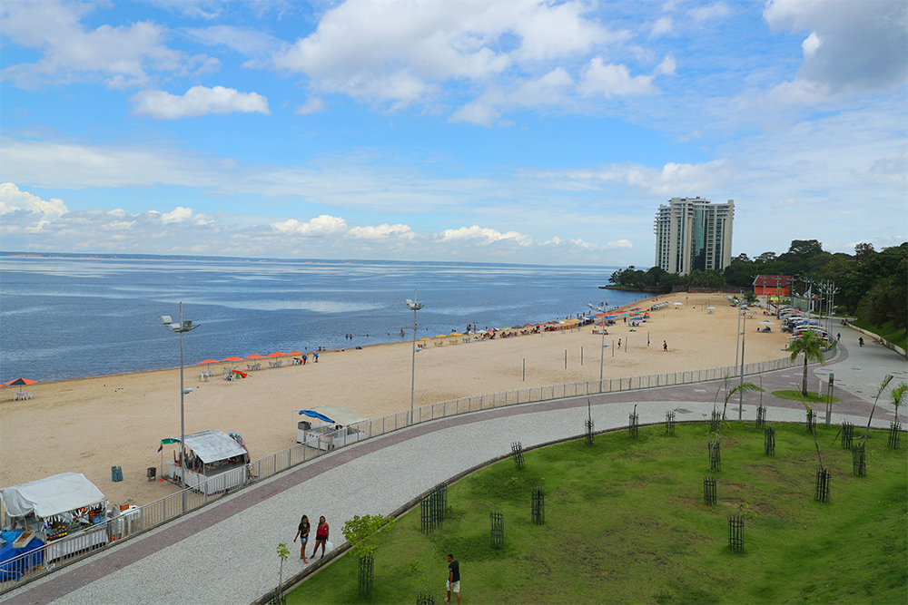

Meio Ambiente
 30/05/25
30/05/25
O "Rio Invisível" do Amazonas intriga cientistas
Pesquisadores investigam fluxo de águas subterrâneas sob a Bacia Amazônica.
 03/06/25
03/06/25
Mais de 300 áreas de Manaus sem água por manutenção elétrica
Manutenção elétrica afeta estações de tratamento e interrompe abastecimento de água.
 25/06/25Oásis escondido no Tocantins: Fervedouros do Jalapão
Fervedouros do Jalapão atraem turistas com águas cristalinas e fenômeno único.
 24/06/25
24/06/25
Suspeito de atropelar e matar assessora jurídica no AC alega não ter visto a vítima
Defesa afirma que suspeito não viu a vítima antes do impacto em Rio Branco.